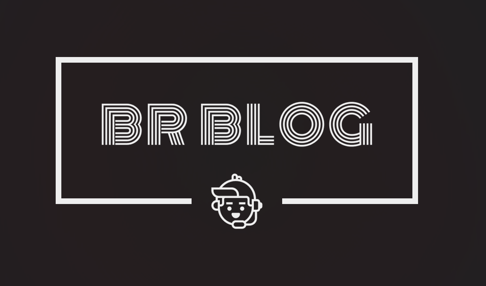

BR BLOG
All rights Reserve 2023 ©
Contact me:


Music holds a huge signifance part in my life, growing up with my music oriented family as almost all of my siblings are talented in singing or playing music instruments such as guitars,drums and more.. I also inherit to do such things especially in playing acoustic guitar and singing, I even joined some contest in my High School Academy such as Battle of the Bands or Band together and I once represent my school Jarmmeth Academy in Vocal Duet in CSANPRISA way back 2016 even though I did not managed to win that contest it lifts up my confidence in performing in stage and overcoming my stage fright and it also brought me a great experience in competing with other people despite of all of our different levels of skills and talents. Untill now I am still using that god given talent that I gratefully had and still part of the choir from our church and performing my duties regularly so I feel that my love for music would be endlessly and will always remain because aside from all of that music brings color to my life, however or whatever my mood is I just listened to music and my mood and thinking will be very different and I will feel alive and energized whenever music is around.
All rights Reserve 2023 ©